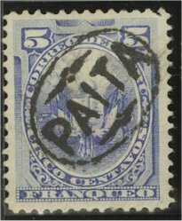
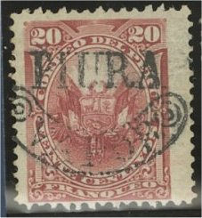
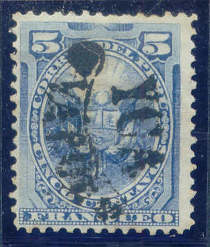

Return To Catalogue - Peru, local stamps, part 1 - Peru - Fiscal stamps
Note: on my website many of the
pictures can not be seen! They are of course present in the
catalogue;
contact me if you want to purchase the catalogue.
In 1884-85 many provisional overprints were used. Overprints exist for Alerta, Ancachs, Apurimao, Arequipa, Ayacucho, Chachapoyas, Chala, Chiclayo, Cuzco, Huacho, Moquegua, Paita, Pasco, Pisco, Piura, Puno and Yca. I have not yet been able to catalogue this section fully. Be careful, many bogus issues exist!
For Peru, local stamps, part 1, click here.

With this overprint 'PAITA' in an ellipse exist the values: 5 c blue (two types of overprint, also in red), 10 c green and 10 c grey.
A large boxed 'PASCO' overprint exists on the 5 c blue (overprint in red) and 10 c black of Peru.
A 'PISCO' overprint in a circle exist on a 5 c blue stamp of Peru.

Probably forged 'PISCO' overprint, in my opinion there shouldn't
be two horizontal lines above and below 'PISCO'.
Stamps with overprint 'PIURA' in a straight line


Six different stamps of Peru exist with this overprint; (5 c blue, 20 c red and 50 c green and 1 c green, 2 c red and 5 c blue; the last three with oval overprint with 'LIMA'). The overprint exists in two sizes.
Two stamps (5 c blue and 20 c red) were issued with overprint 'PIURA' in an ellipse:


Stamps with overprint 'PIURA VAPOR':



Two postage stamps (5 c blue and 20 c red) and two postage due stamps (5 c red and 10 c orange) were issued in 1884 with this 'PIURA VAPOR' overprint.
Examples:


Stamp of Arequipa with 'PUNO' overprint
Two types of this overprint exist; with '17' or with '1-ABR'.
Left genuine 'PUNO 17 M' overprint, middle and right forgeries
with bogus 'PUNO F' overprint


With this overprint ('YCA' in an ellipse) 4 stamps were issued: 1 c orange, 5 c blue, 10 c grey and 20 c red.

('YCA VAPOR' overprint)
Another overprint exists with 'YCA VAPOR' (similar to Piura) on 1 c orange, 5 c blue and 20 c red.


Other red overprints of Yca.
{kind=link}